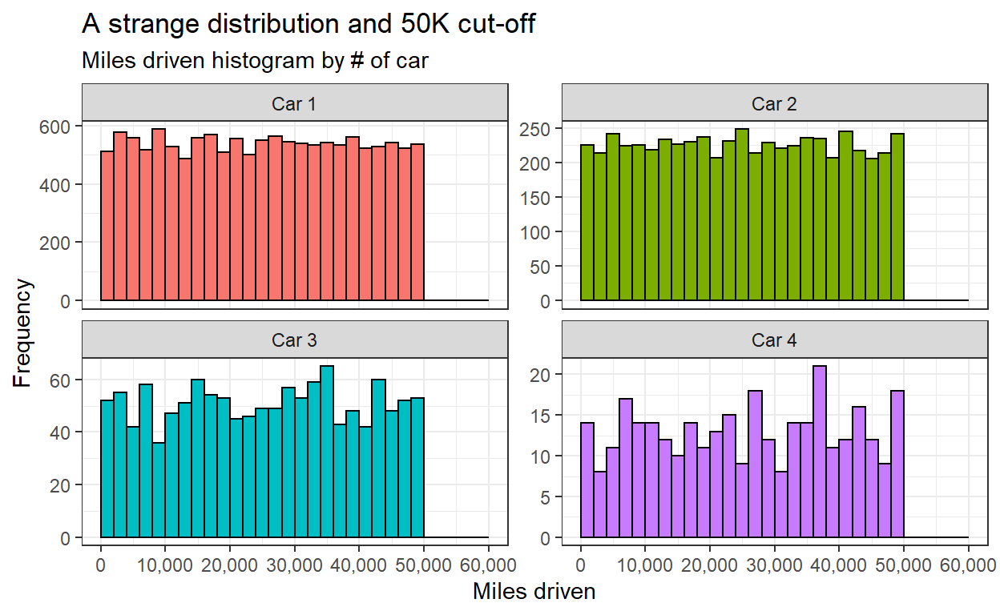
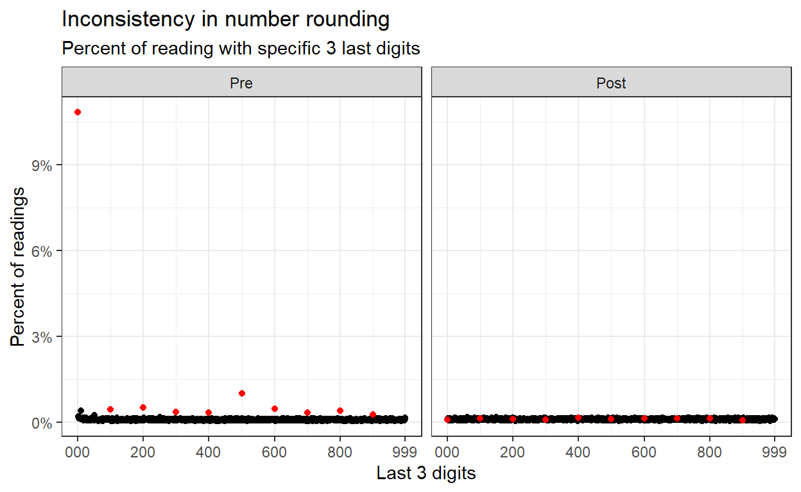
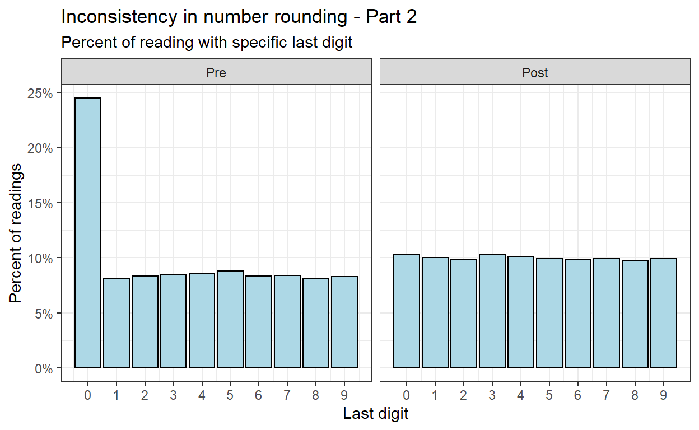
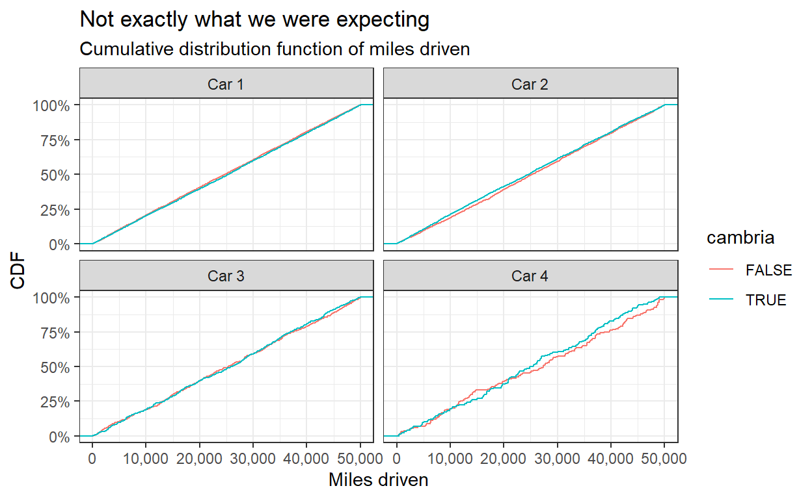
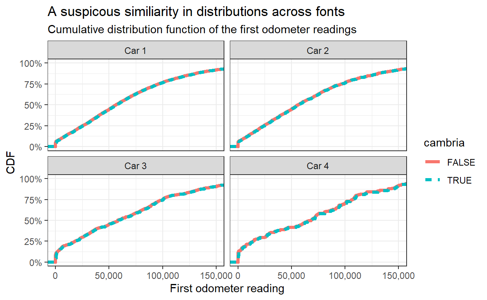
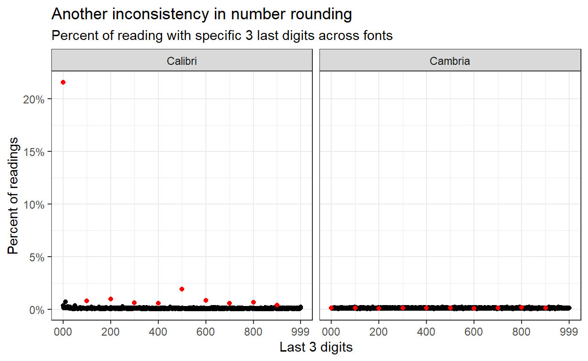

A blog post suggested evidence of fraud in an influential field experiment. I replicate their analysis and share the code.
In recent days, Psychology and Business Management twitter is on fire. Not due to the COVID-19 pandemic, exiting Afghanistan, or climate change, but due to evidence of flaws in a highly cited paper from 2012 titled: “Signing at the beginning makes ethics salient and decreases dishonest self-reports in comparison to signing at the end”.
For some context see:
- Datacolada
- PNAS 2012 paper
- PNAS 2020 paper
In this post, I will try to replicate some of the findings of Prof. Uri Simonsohn, Prof. Leif D. Nelson, Prof. Joe Simmons and unknown others visualizing the concerns with one of the experiments in the study that originally claimed dishonesty can be reduced by asking people to sign a statement of honest intent before providing information (i.e., at the top of a document) rather than after providing information (i.e., at the bottom of a document).
If you are an Rstats user, I hope for you this would be a quick peek to some of the methods used (in R) to detect errors, frauds, and miscalculations in scientific literature.
The data used for this post is available at this link in a file named: DrivingdataAll(1).xls.
As you will see later, for technical reasons I opened the file in MS Excel and saved it as an .xlsx file.
The experiment (#3 in the original paper) used data from a car insurance company. Customers were randomized to receive a policy with an honesty statement at the top or at the bottom of the form. “The first odometer reading was based on the mileage information the insurance company previously had on file, whereas the second was the current odometer reading that customers reported (and had an incentive to report smaller numbers - AMT).” To make a long story short, the conclusion was “a simple change in the location of a signature request can significantly influence the extent to which people on average will misreport information to advance their own self-interest.”
First, let us read the data and change columns names for consistency, comfort, and brevity.
drv <- read_xlsx("Data/DrivingdataAll.xlsx") %>%
janitor::clean_names() %>%
rename(arm = "omr_version",
pid = "policy_number_masked",
car_1_pre = "odom_reading_1_previous",
car_1_post = "odom_reading_1_update",
car_2_pre = "odom_reading_2_previous",
car_2_post = "odom_reading_2_update",
car_3_pre = "odom_reading_3_previous",
car_3_post = "odom_reading_3_update",
car_4_pre = "odom_reading_4_previous",
car_4_post = "odom_reading_4_update",
avg_pre = "odom_reading_all_previous",
avg_post = "odom_reading_all_update",
avg_diff = "diff_all",
ind1 = "count1",
ind2 = "count2",
ind3 = "count3",
ind4 = "count4",
n_cars = "number_cars_in_policy"
)
sample_n(drv, 10) %>% paged_table()
For each policy there is a row with up to four cars with first and last odometer readings.
One early clue of what is about to come was mentioned in the PNAS 2020 paper. Despite randomization, baseline readings were significantly different.
drv %>% select(avg_pre, avg_post, avg_diff, arm) %>%
tbl_summary(by = arm,
statistic = list(all_continuous() ~ "{mean} ({sd})"),
digits = list(all_continuous() ~ c(2,2))) %>%
add_p(test = list(all_continuous() ~ "t.test"))
| Characteristic | Sign Bottom, N = 6,6641 | Sign Top, N = 6,8241 | p-value2 |
|---|---|---|---|
| avg_pre | 75,034.50 (50,265.35) | 59,692.71 (49,953.51) | <0.001 |
| avg_post | 98,705.14 (51,934.76) | 85,791.10 (51,701.31) | <0.001 |
| avg_diff | 23,670.64 (12,621.38) | 26,098.40 (12,253.37) | <0.001 |
|
1
Mean (SD)
2
Welch Two Sample t-test
|
|||
It is unknown to me why numbers were presented to the second decimal digit (in the paper), but I left it here as it is irrelevant for the topic.
I will refer to some pitfalls of using spreadsheet applications for processing data later, but for now, let us pivot the table to a more tidy format. This reshaping would ease visualizing. Notice how I try to conduct most if not all processing in an R or Rmarkdown script. This way, each step is documented and can be more easily replicated. This also allows correcting early mistakes without having to redo all of the analysis manually.
drv_long <- drv %>%
select(arm, pid, starts_with("car")) %>%
pivot_longer(cols = starts_with("car"), names_to = "car", values_to = "miles") %>%
na.omit() %>%
extract(col = car,
into = c("car_num", "period"),
regex = "car_([[:digit:]])_([[:alpha:]]*)") %>%
mutate(car_num = paste0("Car ", car_num),
period = str_to_title(period),
period = factor(period) %>% fct_rev())
sample_n(drv_long, 10) %>% paged_table()
The distribution of miles driven is expected to be somewhat of a positively skewed normal distribution. Miles cannot be below 0 but can go very high in rare cases. The Datacolada blog post authors go out of their way and find a similar study design to show that this expectation is not unrealistic.
drv_long %>%
arrange(pid, car_num, period) %>%
group_by(pid, car_num) %>%
summarize(miles_diff = diff(miles), .groups = "drop") %>%
ggplot(aes(miles_diff, fill = car_num)) +
geom_histogram(binwidth = 2000, center = 1000, show.legend = F, col = "black") +
facet_wrap(~car_num, scales = "free_y") +
scale_x_continuous(limits = c(0,60000), breaks = seq(0, 75e3, 1e4),
labels = comma_format()) +
labs(x = "Miles driven", y = "Frequency",
title = "A strange distribution and 50K cut-off",
subtitle = "Miles driven histogram by # of car")

However, the miles driven have a uniform distribution with many cars almost reaching 50K but no cars at all above. The appearance of this cut-off in all cars raises even more suspicion.
When human report on numbers, rounding is not uncommon. In many fraud detection cases, the round numbers are evidence of human intervention and therefore, possible signs of fraud (by the human reporting the numbers). In our case however, customer rounding odometer reading are not a problem and are actually expected. The diminished frequency of round numbers in the second odometer reading (supposedly reported by the customers) suggests of at least a possible mistake in data processing. The existence of rounding in the first odometer reading suggest an unexplained inconsistency.
drv_long %>%
mutate(last_digits = miles %% 1e3) %>%
group_by(period, last_digits) %>%
summarize(n = n()) %>%
mutate(pct = n / sum(n),
mult_100 = last_digits %% 100 == 0) %>%
ungroup() %>%
arrange(mult_100) %>%
ggplot(aes(last_digits, pct, col = mult_100)) +
geom_point(show.legend = F) +
scale_color_manual(values = c("black", "red")) +
scale_y_continuous(labels = percent_format(accuracy = 1)) +
scale_x_continuous(breaks = c(0,200,400,600,800,999),
labels = c("000", 200, 400, 600, 800, 999)) +
facet_wrap(~period) +
labs(x = "Last 3 digits", y = "Percent of readings",
title = "Inconsistency in number rounding",
subtitle = "Percent of reading with specific 3 last digits"
)

This number rounding can also be examined on a smaller scale (last digit).
drv_long %>%
mutate(last_digits = miles %% 1e1) %>%
group_by(period, last_digits) %>%
summarize(n = n()) %>%
mutate(pct = n / sum(n)) %>%
ungroup() %>%
ggplot(aes(last_digits, pct)) +
geom_col(col = "black", fill = "lightblue") +
facet_wrap(~period) +
scale_x_continuous(breaks = 0:9) +
scale_y_continuous(labels = percent_format(accuracy = 1)) +
labs(x = "Last digit", y = "Percent of readings",
title = "Inconsistency in number rounding - Part 2",
subtitle = "Percent of reading with specific last digit")

This next part is challenging. Files with the extension .xls or .xlsx can be filled with metadata presented in fonts, color-coding, comments, and others. These are frowned upon yet exist widespread. For elaboration why and what to do instead see this on Data Organization in Spreadsheets.
In our case, there is a suspicion the some data manipulation is apparent in different fonts in the column with the first odometer reading of the first car. Some are in Cambria font and some are in Calibri. Actually exactly half each. To check for this issue we need to read not the data, but the metadata. This is available using the tidyxl package, but only for .xlsx files. This is the reason we opened the file in MS Excel and changed the extension at the beginning of this post.
library(tidyxl)
drv_fmt <- xlsx_cells("Data/DrivingdataAll.xlsx")
drv_fmt2 <- xlsx_formats("Data/DrivingdataAll.xlsx")
The xlsx cells() function is a dataframe with a row for each cell in the original spreadsheet. The xlsx_formats() function is a list with information regarding types of formatting found in the spreadsheet. Their combination allows for detection of the font (and other properties) in each cell. Here we extract the suspected format with the Cambria font.
drv_fmt2$local$font$name %>% enframe() %>% paged_table()
susp_fmt <- which(drv_fmt2$local$font$name == "Cambria")
Then we locate all the rows in the original spreadsheet with Cambria in the first odometer reading column.
susp_rows <- drv_fmt %>%
filter(local_format_id == susp_fmt, col == 3) %>%
distinct(row) %>% pull()
And then we create an indicator of the font for each policy (row in the original spreadsheet). Notice that because of the headings the first policy appears in row 2. Therefore, pid links to the row - 1.
drv_long_font <- drv_long %>%
mutate(cambria = pid %in% (susp_rows - 1))
Finally, we can check for the cumulative distribution function of the miles driven between the Cambria and Calibri fonts. For completeness we will visualize all cars.
drv_long_font %>%
arrange(pid, car_num, period) %>%
group_by(pid, cambria, car_num) %>%
summarize(miles_diff = diff(miles), .groups = "drop") %>%
ggplot(aes(miles_diff, col = cambria)) +
stat_ecdf(geom = "step") +
facet_wrap(~car_num) +
scale_x_continuous(labels = comma_format()) +
scale_y_continuous(labels = percent_format(accuracy = 1)) +
labs(x = "Miles driven", y = "CDF",
title = "Not exactly what we were expecting",
subtitle = "Cumulative distribution function of miles driven")

Wait! This is strange. It looks very different than the plot we were trying to replicate. Did you spot the mistake? The Datacolada blogpost Figure 5 title states “CDFs of Miles Driven …” but the x-axis and the data is actually the first odometer reading. Even fraud detection posts can have mistakes (and as written in the disclaimers - also this post). However, the analysis is clear enough so we can replicate the original Figure.
drv_long_font %>%
filter(period == "Pre") %>%
ggplot(aes(miles, col = cambria, lty = cambria)) +
stat_ecdf(geom = "step", size = 1.5) +
facet_wrap(~car_num) +
coord_cartesian(xlim = c(0,1.5e5)) +
scale_x_continuous(labels = comma_format()) +
scale_y_continuous(labels = percent_format(accuracy = 1)) +
labs(x = "First odometer reading", y = "CDF",
title = "A suspicous similiarity in distributions across fonts",
subtitle = "Cumulative distribution function of the first odometer readings")

Lastly, we can use the graph created earlier to do the same for number rounding with different fonts. Here also, the absence of obvious number rounding and the inconsistency of the number rounding pattern across fonts suggests a concern regarding the data processing.
drv_long_font %>%
filter(period == "Pre") %>%
mutate(last_digits = miles %% 1e3) %>%
mutate(font = if_else(cambria, "Cambria", "Calibri")) %>%
group_by(font, last_digits) %>%
summarize(n = n()) %>%
mutate(pct = n / sum(n),
mult_100 = last_digits %% 100 == 0) %>%
ungroup() %>%
arrange(mult_100) %>%
ggplot(aes(last_digits, pct, col = mult_100)) +
geom_point(show.legend = F) +
scale_color_manual(values = c("black", "red")) +
scale_y_continuous(labels = percent_format(accuracy = 1)) +
scale_x_continuous(breaks = c(0,200,400,600,800,999),
labels = c("000", 200, 400, 600, 800, 999)) +
facet_wrap(~font) +
labs(x = "Last 3 digits", y = "Percent of readings",
title = "Another inconsistency in number rounding",
subtitle = "Percent of reading with specific 3 last digits across fonts"
)

gtsummary is great for fast, easy, pretty statistical tables.regex knowledge you can save precious time.tidyxl is a tool for the really hard yet not uncommon nuts.rmarkdown is fantastic.